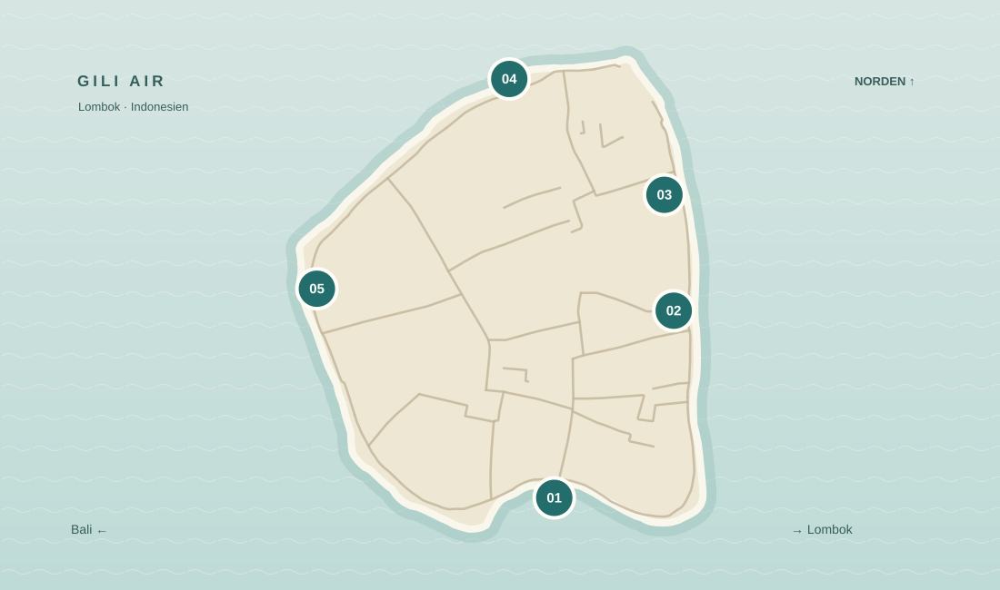
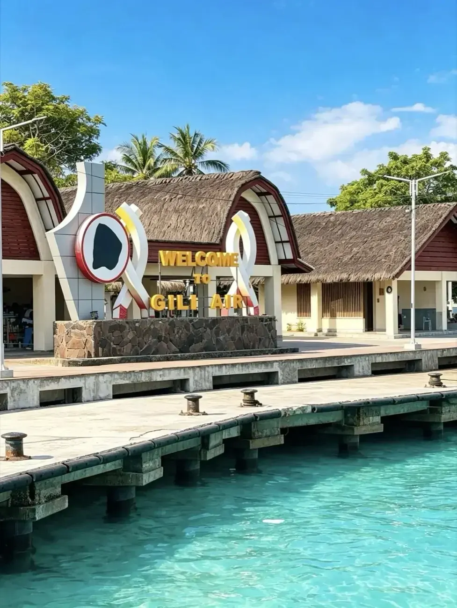
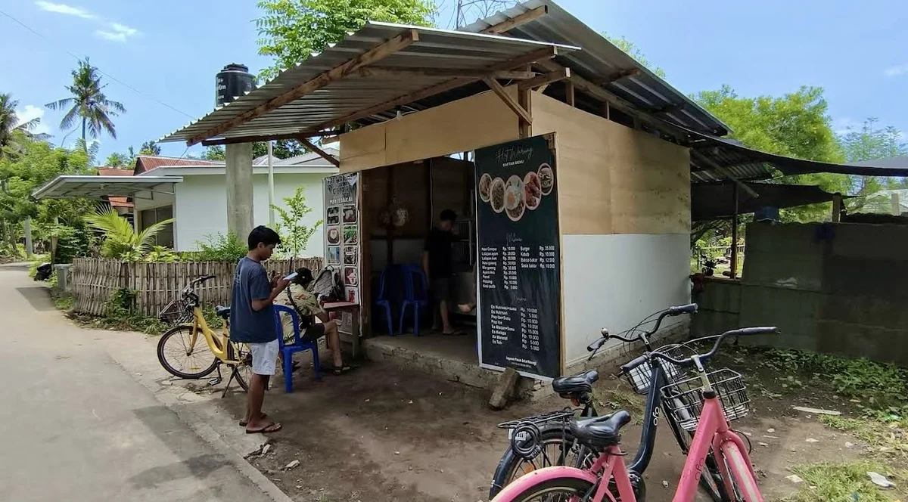
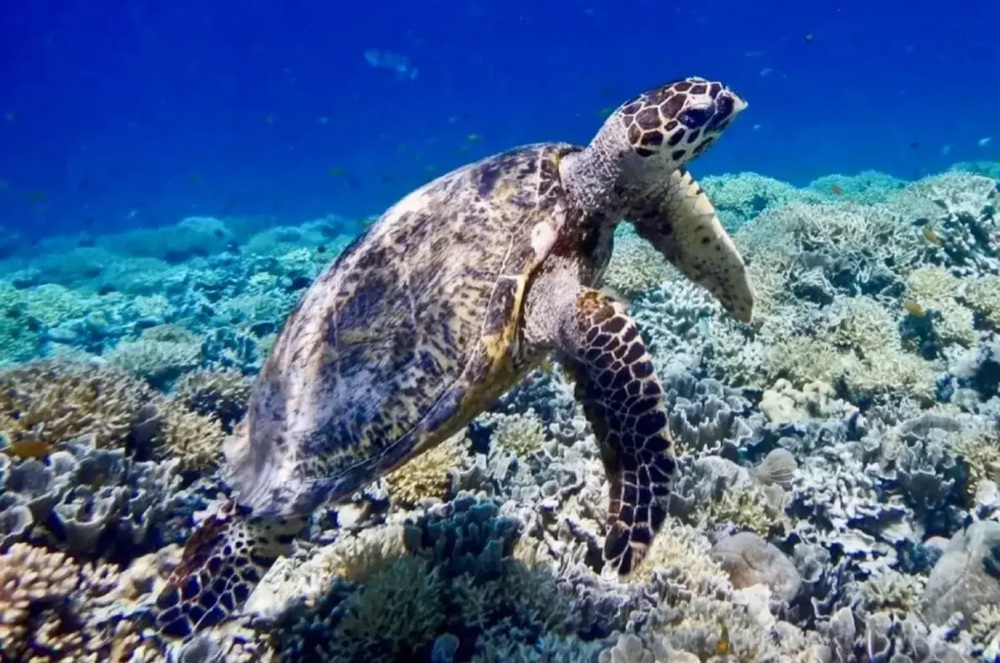
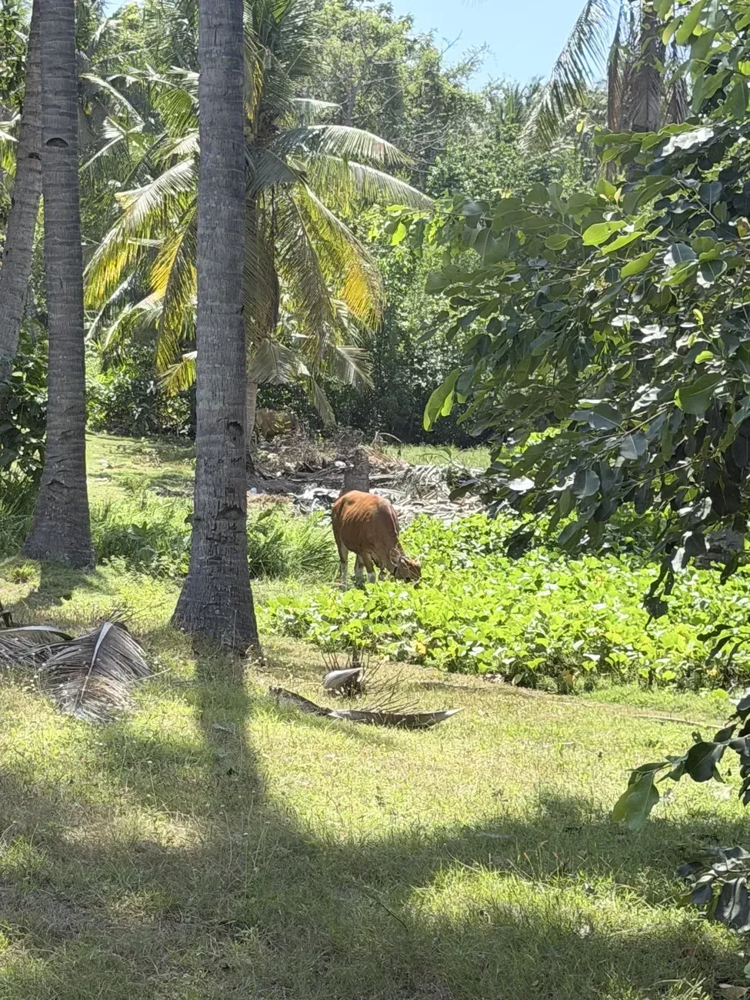
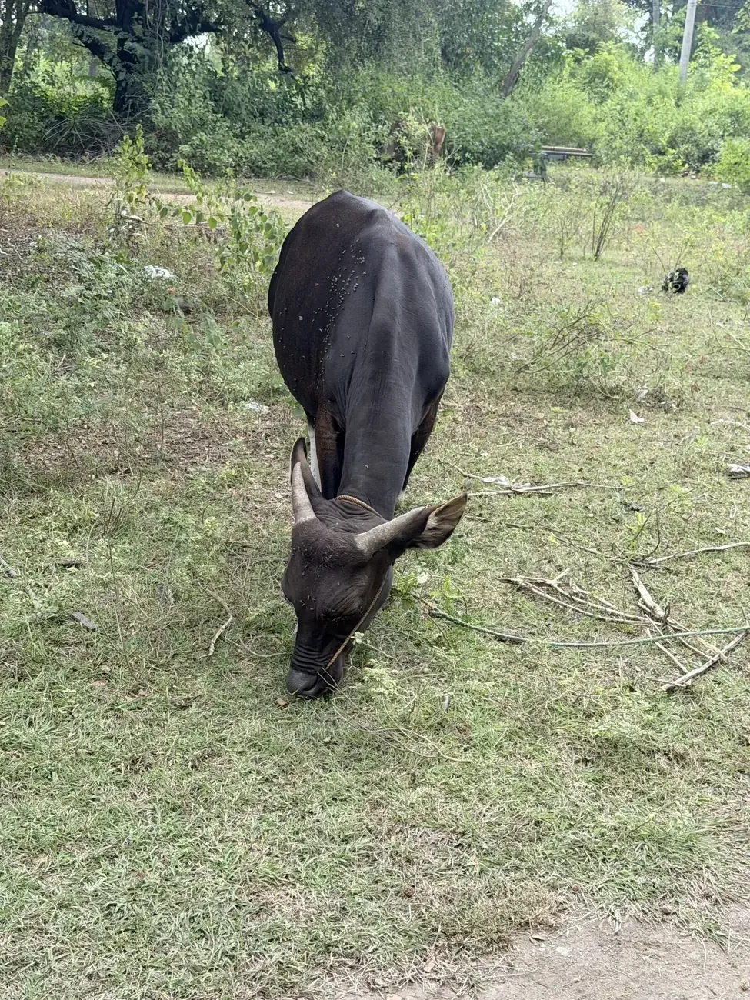
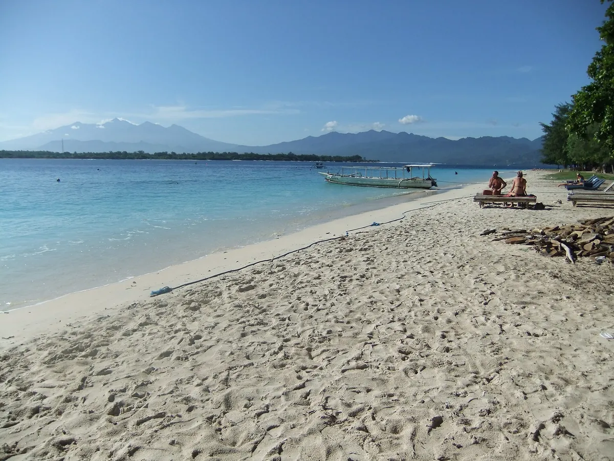
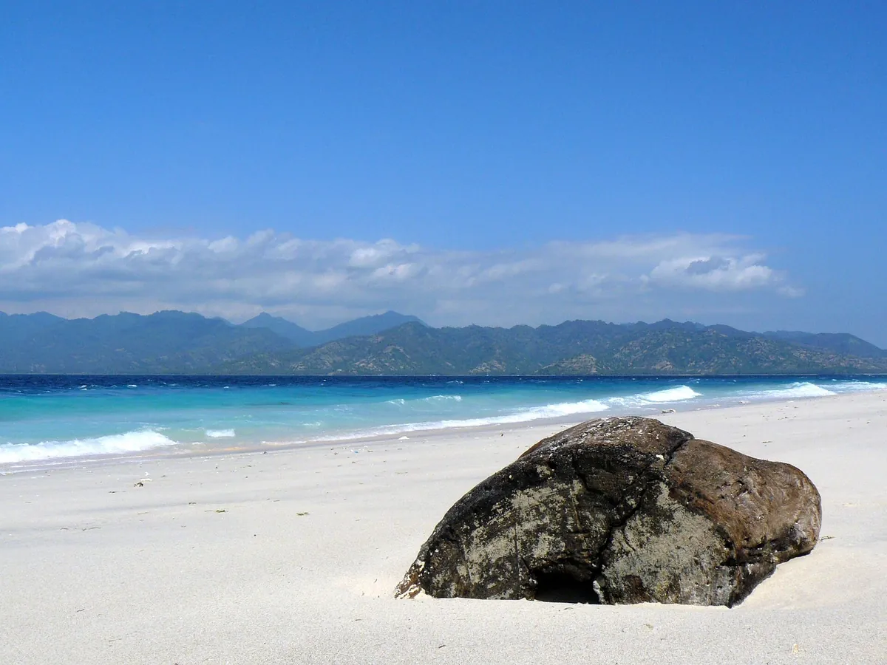
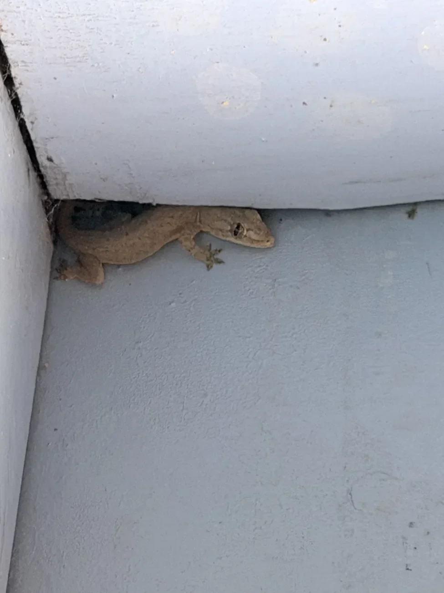

Schnorcheln vom Strand
Maske auf, vom Strand rein, fertig. An guten Tagen sahen wir fast jeden Morgen Schildkröten. Ein Boot? Brauchten wir nie.

Zwei Wochen auf einer Insel, die man in zwei Stunden umrundet. Klingt nach zu viel. War zu wenig.
Guide entdeckenGili Air war der erste Ort unserer Weltreise, an dem wir richtig runterfahren konnten. Nach Monaten voller Planung stiegen wir vom Boot, die Füsse im Wasser, und dachten nur: eeendlich. Was die Insel ausmacht, merkst du erst nach ein paar Tagen.
Hier steht alles, was wir vor der Abreise gern gewusst hätten. Und ein paar Dinge, die in keinem Prospekt stehen.
Eine Liste mit Sehenswürdigkeiten wäre hier sehr kurz. Unser Tag hatte trotzdem feste Termine.


Maske auf, vom Strand rein, fertig. An guten Tagen sahen wir fast jeden Morgen Schildkröten. Ein Boot? Brauchten wir nie.
Einmal rund um die Insel, anderthalb bis zwei Stunden. Im Osten Cafés und Tauchschulen, im Norden plötzlich Stille. Am besten früh, bevor der Sand unter den Füssen brennt.
In den Sand sitzen und zuschauen, wie die Sonne hinter Bali verschwindet. Eintritt: null. Wir kamen fast jeden Abend wieder.
Fünf Ecken, die wir nach zwei Wochen im Schlaf gefunden hätten. Einmal rundherum, vom Anleger bis zum Sonnenuntergang.


01Anleger und Dorf
02Ostküste und Warungs
03Riff an der Ost- und Nordostküste 04Ruhiger Norden
04Ruhiger Norden
 05Sonnenuntergang an der Westküste
05Sonnenuntergang an der Westküste
Ankommen, Füsse nass, los geht’s.

Fast alle Boote legen im Südosten an. Von hier sind es nur ein paar Minuten zu den meisten Unterkünften. Aber es sind sandige Minuten, und mit Rollkoffer fühlen sie sich doppelt so lang an.
Der Anleger als Ausflugsziel? Nein. Als Startpunkt für die Inselrunde: perfekt.
Gepäck abladen, Füsse ins Wasser, im nächsten Warung ein Nasi Goreng. Mehr Plan braucht der erste Tag nicht.
Im Hafenbereich wird nicht geschwommen. Die Boote haben Vortritt, und sie bremsen nicht für Touristen.
Unser Wohnzimmer für zwei Wochen.

An der Ostküste liegt alles nah beieinander: Bungalows, Cafés, Tauchschulen. Wir haben zwei Wochen im Segar Village gewohnt, direkt hinter dem Strand. Gegessen haben wir meistens im Inseldorf, im Warung Hat und im Flavornesia. So oft, dass man uns irgendwann kannte. An die Gespräche dort denken wir fast so gern zurück wie ans Meer.
Für uns die beste Basis der Insel. Morgens schnell am Riff, abends ohne Umweg im Warung.
Geh ruhig immer wieder in denselben kleinen Warung. Beim ersten Mal bist du Gast. Beim dritten Mal fühlst du dich angekommen, so war es jedenfalls bei uns.
Warungs kommen und gehen schneller, als ein Reiseführer gedruckt ist. Unsere Faustregel: Iss dort, wo Einheimische sitzen.
Schildkröten. Ohne Boot, ohne Tour, ohne Wecker um fünf.

Unsere erste Schildkröte war direkt vor dem Strand. Marc hat sie auf der Höhe vom Segar-Village-Restaurant entdeckt, wie sie seelenruhig am Riff gefressen hat. Und das Beste: Wir waren die Einzigen bei ihr. Unsere Zeit war morgens zwischen sieben und neun, dann ist das Meer ruhig und die Sicht am besten. Neben Schildkröten haben wir an der Ost- und Nordostseite Papageienfische, Rochen und kleine Riffhaie gesehen. Die berühmten Unterwasserstatuen vor Gili Meno haben wir bewusst ausgelassen. Dort schwimmen zu viele Menschen gleichzeitig um zu wenige Statuen.
Lohnt sich das? Ja. Die Schildkröten waren der Höhepunkt unserer zwei Wochen. Versprechen können wir dir trotzdem nichts, die Tiere halten sich an keinen Fahrplan.
Schau genau hin. Schildkröten sind zum Teil richtig gut getarnt, und wer nur nach dem grossen Panzer sucht, schwimmt glatt daran vorbei. Und halt Abstand, zu den Tieren genauso wie zu den Korallen.
Strömung und Wasserstand wechseln täglich. Frag bei einer Tauchschule, wo du heute am besten reingehst. Bei Ebbe ist das Riff stellenweise so flach, dass du mit dem Bauch fast drüberschrammst.
Hier hört das Café-Angebot auf. Zum Glück.
Im Norden wird der Weg schmal, der Schatten knapp und die Insel auf einmal still. Genau das mochten wir: laufen, aufs Wasser schauen und nicht beim nächsten Café hängen bleiben.
Lohnt sich der Norden? Wenn du die Insel zu Fuss erleben willst: ja. Wenn du ein Foto für Instagram suchst: eher nicht.
Früh los, Wasser und Hut mit. Um elf ist der Sand heiss und der Schatten aufgebraucht.
Je nach Gezeiten sieht der Strand hier jeden Tag ein bisschen anders aus.
Der Abend, für den wir immer wieder hergelaufen sind.
Abends füllen sich im Westen die Strandbars, und irgendwo läuft immer Musik. Wir sassen trotzdem meistens einfach im Sand.
Ein Geheimtipp ist das nicht, das wissen hier alle. Schön ist es trotzdem, jedes Mal.
Komm etwas früher und such dir deinen Platz. Reservieren musst du nichts, ausser du willst unbedingt einen Sitzsack.
Wolken klauen Bali gern mal. Für den Heimweg brauchst du eine Lampe. Wir haben das an einem der ersten Abende gelernt: zurück über den dunklen Sandweg, mit Handylicht und einem Akku, der in jeder Kurve ein Prozent weniger hatte. Und Mückenspray: Kaum ist die Sonne weg, kommen sie in Scharen. Zum Baden ist das Wasser im Westen bei Ebbe zu flach.
Wir sind die Runde mehrmals gelaufen. Langweilig wurde sie nie, nur heiss.
Start am Anleger, dann gegen den Uhrzeigersinn. Im Osten reiht sich Café an Warung an Tauchschule. Im Norden wird der Weg schmal und ruhig. Im Westen geht der Blick plötzlich auf bis nach Bali, und über den Süden bist du wieder zurück.
Am schönsten ist die Runde frühmorgens. Ab elf brennt der Sand, und im Norden gibt es kaum Schatten. Wer lieber später losgeht, plant so, dass er zum Sonnenuntergang im Westen ankommt.
Zwischen sieben und neun schnorcheln. Danach Frühstück an der Ostküste. Die Mittagshitze haben wir lesend im Schatten ausgesessen, am späten Nachmittag sind wir rüber in den Westen zum Sonnenuntergang, und abends ab in den Warung.
Zwei Wochen lang jeden Tag dasselbe. Klingt langweilig? Für uns war genau das der Punkt. Am ersten Tag würden wir deshalb nichts buchen: ankommen, einmal rumlaufen, etwas essen. Der Rest ergibt sich.
Zwei Stunden vor Sonnenuntergang am Anleger losgehen, über Osten und Norden in den Westen. Du kommst genau rechtzeitig an. Lampe für den Heimweg nicht vergessen.
So sind wir in die Weltreise gestartet. Mit echten Nächten und echten Preisen, falls du die Strecke nachreisen willst.



Wenn die Sonne tiefer sinkt, füllen sich im Westen die Bars. Wir haben uns meistens einfach in den Sand gesetzt und zugeschaut, wie Bali langsam zur Silhouette wird.
Cocktails gäbe es. Musik auch. Gebraucht haben wir beides nicht. Die schönsten Abende waren die, an denen genau nichts passiert ist.

Neben dem Warung Hat steht ein kleiner Kiosk. Mit dem Besitzer sind wir erst über unsere Reise ins Reden gekommen, dann übers Leben auf der Insel und irgendwann über Dinge, die wir in der Schweiz für selbstverständlich halten. Sauberes Wasser aus dem Hahn zum Beispiel. Ein Satz, der anders klingt, wenn man ihn auf einer Insel sagt, auf der das Leitungswasser salzig ist.
Wegen solcher Gespräche kamen uns zwei Wochen nie zu lang vor.
Unser bester Tipp: Bleib lang genug, dass dich die Leute wiedererkennen.

Das Riff fängt an vielen Stellen direkt vor dem Strand an. Zwischen sieben und neun ist das Meer am ruhigsten, und im Juli konnten wir an manchen Morgen erstaunlich weit sehen. Bei Wind oder in einer anderen Saison sieht das schnell anders aus.
An der Ost- und Nordostseite waren die meisten Schildkröten. Man muss allerdings lernen, sie zu sehen: Auf dem Riff sind sie oft kaum vom Stein zu unterscheiden, bis sich plötzlich ein Kopf bewegt. Unsere Regel: Hände bei dir, Füsse weg von den Korallen. Bei Ebbe ist das schwieriger, als es klingt, weil das Wasser über dem Riff dann sehr flach wird. Schau also vorher auf Gezeiten und Strömung, und im Zweifel weiss jede Tauchschule Bescheid.
Die Unterwasserstatuen liegen vor Gili Meno: „Nest“, 48 Figuren in etwa vier Metern Tiefe, Pflichtstopp fast jeder Schnorcheltour. Geübte Schwimmer erreichen sie auch vom Strand an der Westseite von Meno. Wer allein losschwimmt: Bleib in deinen Grenzen, und bei Strömung nicht weit raus.
Wir waren entweder zu Fuss unterwegs oder im Wasser. Wer mehr Programm braucht, findet es trotzdem.

Fast jede Schnorcheltour hält bei den Statuen und an ein paar Riffen rund um die drei Gilis. „Nest“ siehst du sogar von der Oberfläche aus. Frag beim Buchen nach Gruppengrösse und Stopps. Und bei rauer See lieber einen Tag warten.
Du willst ohne Boot ins Wasser? Dann brauchst du keine Tour, vor der Ostküste ist genug los. Wir haben uns nach ein paar Tagen eine eigene Maske gekauft, weil das günstiger war als jeden Tag eine zu mieten.
Es gibt mehrere Tauchschulen für Schnuppertauchen und Kurse. Vergleich nicht nur die Preise. Frag nach Gruppengrösse, dem Zustand der Ausrüstung und ob deine Versicherung Tauchunfälle deckt. Wir sind beim Schnorcheln geblieben, uns hat das Riff vor der Tür gereicht.
An Land gibt es Yoga, Massagen und ab und zu Livemusik am Strand. Unsere Lieblingsbeschäftigung war eine andere: im Warung mit jemandem ins Reden kommen und die Zeit vergessen.
Wir waren nur auf Gili Air. Damit du weisst, worauf du dich bei den Nachbarn einlässt, hier das Wichtigste in Kürze.
Die Grösste und Lauteste. Hier wird gefeiert, getaucht und vom Hügel aus der Sonnenuntergang geschaut.

Gili Trawangan ist die grösste und meistbesuchte der drei Gilis. Abends Bars mit Livemusik und DJs, tagsüber trotzdem ruhige Strandlokale. Von der Stimmung her liegt Gili Air genau zwischen dem Trubel hier und der Stille auf Meno.
Fast alle Tauchschulen der Gilis sitzen hier, bekannte Tauchplätze heissen Shark Point, Manta Point und Simon’s Reef. Dazu kommen eine Aufzuchtstation für Schildkröten und Gratiskino am Strand, solange du etwas bestellst. Und ein Hügel, von dem aus du bei Sonnenuntergang alle drei Gilis, Lombok und Bali auf einmal siehst.
Geldautomaten gibt es genug, Kleingeld trotzdem nie. Bring kleine Scheine mit. In schickeren Restaurants kommen teils 21 Prozent Steuer und Service obendrauf. Ein einfaches Zimmer mit Ventilator gibt es ab rund 5 CHF, mit Klimaanlage ab rund 14 CHF.
Lass dein Glas nie unbeaufsichtigt. Selbstgebrannter Arak kann Methanol enthalten und hat schon Menschen getötet, also lieber Bier. Drogen werden in Indonesien hart bestraft, egal wie entspannt die Party wirkt. Und schwimm nie zwischen den Inseln hin und her: Die Strömung ist stark, es gab Tote. Im Juli und August kommen ausserdem öfter Quallen vorbei.
Im Zweiten Weltkrieg nutzte das japanische Militär die Insel als Beobachtungsposten und Gefangenenlager. Dauerhaft bewohnt ist sie erst seit den 1970ern, die ersten Rucksacktouristen kamen in den 80ern. 2009 zählte man 35’000 Besucher im Jahr, 2015 über eine Million. Die Ruhe von damals sucht man also vergeblich.
Die Kleinste und Stillste. Mit Vogelpark, Schildkröten und Statuen unter Wasser.

Auf Gili Meno leben rund 500 Menschen. Weniger Läden, weniger Bars, weniger Betten, dafür gelten die Strände als die schönsten der drei Inseln. Wer wirklich Ruhe sucht, findet sie hier.
Mitten auf der Insel gibt es einen Vogelpark mit Aras, Flamingos und Pelikanen. Und, warum auch immer, einem Krokodil und einem Känguru. Dazu eine Schildkrötenstation und vor der Küste „Nest“, den Kreis aus 48 Statuen. Auf der Westseite liegt ein flacher See, in dem in der Trockenzeit Salz gewonnen wird.
Seit 2017 kommen Frischwasser und Strom per Unterwasserleitung von Lombok. Aus dem Hahn trinken solltest du trotzdem nicht.
Ab Gili Air kostet das öffentliche Boot rund 2 CHF. Ab Bangsal auf Lombok bist du in etwa einer halben Stunde da.
Auf Meno gibt es weder Polizei noch Geldautomaten. Nimm also genug Bargeld mit, und schwimm auch von hier nicht zu den Nachbarinseln.
Die Fotos in diesem Abschnitt stammen von Wikimedia Commons und stehen unter freien Lizenzen. Wo die Lizenz eine Nennung verlangt, steht sie hier:
Kein Flughafen, keine Brücke. Du kommst per Boot, von Bali oder von Lombok. Wir haben die längere Variante genommen.
Die meisten direkten Schnellboote starten in Padang Bai. Bei uns dauerte die Überfahrt rund zwei Stunden. Je nach Hafen, Anbieter und Seegang können es auch anderthalb bis vier sein, ab Sanur oder Serangan sowieso länger.
Bezahlt haben wir 1’497 THB für zwei, rund 37 CHF, inklusive Abholung im Hotel in Kuta. Üblich sind 350’000 bis 800’000 IDR pro Person und Strecke, also etwa 16 bis 37 CHF.
Der Start war etwas speziell. Laut Voucher hätten wir bei IKEA in einen Bus nach Padang Bai steigen sollen. Bei IKEA. Auf Bali. Unser Fahrer fuhr uns für ein paar Franken mehr direkt zum Hafen, und wir haben nicht lange überlegt. Die Hafentaxe von 30’000 IDR pro Person war nicht im Ticket und wurde bar am Hafen fällig. Sonst stand auf dem Ticket: 60 Minuten vorher einchecken, 20 kg Gepäck, gratis stornierbar bis 72 Stunden vorher.
Manche Schnellboote halten zuerst auf Trawangan oder Meno, das kostet Zeit. Und Gepäck kommt nicht immer gleichzeitig mit dir an. Wertsachen und Elektronik gehören deshalb ins Handgepäck. Prüf vor dem Buchen, ob dein Boot wirklich auf Gili Air hält.
Wir haben vorab gebucht und würden das in der Hochsaison wieder so machen. Manche Anbieter wollen die Rückfahrt am Vortag bestätigt haben, frag danach. Und rechne grosszügig: Vom Hotel in Kuta bis zum ersten Schritt auf Gili Air waren wir rund viereinhalb Stunden unterwegs. Bei Seegang schaukelt es ordentlich. Wer schnell seekrank wird, holt sich vorher etwas in der Apotheke und setzt sich in die Bootsmitte.
Ab dem Hafen Bangsal im Nordwesten von Lombok bist du in 10 bis 40 Minuten drüben. Das öffentliche Boot kostet etwa 1 CHF, fährt aber erst, wenn es voll ist. Das öffentliche Schnellboot kostet rund 4 CHF, ein privates Boot ab etwa 16 CHF für das ganze Boot. Wer lange Schnellbootfahrten hasst, nimmt diesen Weg.
Zwischen den drei Gilis pendeln ebenfalls Boote, nach Meno oder Trawangan für knapp 2 CHF. Der Fahrplan richtet sich nach Wetter und Saison, frag am Anleger. Mehr zur grossen Nachbarinsel steht in unserem Lombok Guide.
Oft hält das Boot vor dem Strand, und du steigst durchs flache Wasser aus. Mit Sandalen und Rucksack kein Problem. Mit einem schweren Rollkoffer wirst du kurz zur Attraktion des Tages. Die meisten Unterkünfte erreichst du in wenigen Minuten zu Fuss, sonst frag nach einer Abholung. Am Anleger wird eine Inselabgabe von 20’000 IDR pro Person fällig, bar. Prüf, ob sie schon im Ticket steckt.
Für einen Flug am selben Tag würden wir die Rückfahrt nie knapp planen. Wind und Seegang verschieben Boote oder streichen sie ganz. Eine Nacht extra auf Bali oder Lombok ist billiger als ein verpasster Flug.
Bezahlt wird in Rupiah, und zwar meistens bar. Grössere Restaurants und manche Unterkünfte nehmen Karten, darauf verlassen würden wir uns nicht. Einen Geldautomaten haben wir in der Nähe vom Anleger gefunden. Der Haken: Pro Abhebung kamen 50’000 bis 75’000 IDR Gebühr dazu, also 2.30 bis 3.50 CHF, plus was die eigene Bank verlangt. Und wenn der Strom ausfällt oder der Automat leer ist, hilft dir auch die beste Karte nichts.
Darum: schon auf Bali oder Lombok genug Bargeld für die ersten Tage abheben. Wie du Gebühren generell sparst, steht bei Kreditkarten & Finanzen.
WLAN gibt es fast überall, nur nicht immer dann, wenn du es brauchst. Für Navigation und Buchungen war eine lokale SIM oder eSIM Gold wert. Wer arbeiten muss, fragt die Unterkunft vorher nach dem WLAN und legt keine wichtige Deadline auf den letzten Abend. Gegen Stromausfälle hilft eine Powerbank.

Leitungswasser haben wir nicht getrunken, und das solltest du auch nicht. Nimm eine Flasche mit und lass sie auffüllen, das spart Plastik. Die Sonne auf den offenen Sandwegen unterschätzt man. Marc hat es gelernt, mit einem Sonnenbrand auf dem Kopf, an einer Stelle, an die man beim Eincremen nie denkt. Also: Hut. Und dann die Klimaanlage. Draussen 30 Grad, drinnen Kühlschrank, und schon war Marc stark erkältet. Stell sie nicht zu kalt, so verlockend es ist. Abends kommt Mückenspray dazu, ab Sonnenuntergang sind sie überall.
Malaria spielt auf Lombok und den Gili-Inseln laut dem Tropeninstitut kaum eine Rolle, Tabletten zur Vorbeugung sind derzeit nicht nötig. Das grössere Thema ist Dengue. Laut dem Schweizer Reisemedizin-Portal osir.ch kommt es das ganze Jahr vor, und die Mücken stechen auch tagsüber. Also: Repellent mit DEET oder Icaridin und lange Kleider am Abend. Die Dengue-Impfung empfiehlt die Schweizer Fachkommission laut healthytravel.ch nur, wenn du schon einmal Dengue hattest (geprüft am 12.10.2026). Mehr dazu auf unserer Seite zu Gesundheit & Impfungen.
Für Kleinigkeiten gibt es auf Gili Air eine Klinik und eine Apotheke. Bei einem echten Notfall geht es per Boot nach Lombok oder Bali, und das Boot fährt nur, wenn das Wetter mitspielt. Darum gehört eine Reisekrankenversicherung mit Rücktransport zur Reise. Die Notrufnummern in Indonesien lauten laut dem indonesischen Tourismusportal: Polizei 110 oder 112, Krankenwagen 118 oder 119, Feuerwehr 113. Am besten gleich ins Handy speichern. Die Helpline des EDA erreichst du rund um die Uhr unter +41 800 24-7-365 oder +41 58 465 33 33 (Quelle: EDA).
Gili Air ist kein Feriendorf, sondern ein Dorf mit Feriengästen. Hier leben Familien, und der Gebetsruf der Moschee gehört zum Tag wie Ebbe und Flut. Im Ramadan ist es ruhiger, manche Betreiber sind dann gar nicht auf der Insel. Bikini am Strand ist völlig normal. Auf dem Weg durchs Dorf ist ein T-Shirt einfach eine nette Geste.


Nasi Goreng, Mie Goreng und Gado Gado gibt es an jeder Ecke, und bei uns standen sie entsprechend oft auf dem Tisch. Dabei hat Lombok eine eigene Küche, die deutlich mehr kann. Und deutlich schärfer ist.
Ayam Taliwang ist gegrilltes junges Huhn mit viel Chili, Zwiebeln und Garnelenpaste. Scharf. Richtig scharf. Dazu gibt es Reis und Plecing Kangkung, Wasserspinat mit Sojasprossen, Kokosraspeln und Tomaten-Sambal. Sate Bulayak ist ein Rindfleischspiess mit Erdnuss-Kokos-Sauce und Reiskuchen im Palmblatt. Und Nasi Balap Puyung, Reis mit scharfem Huhn, Erdnüssen und Sambal, essen viele schon zum Frühstück.
Nicht jedes Lokal auf Gili Air kocht das. Frag einfach nach.
Sambal, die rote Chilipaste, gehört hier zu fast jedem Essen. Und «ein bisschen scharf» ist auf Lombok eine sehr dehnbare Angabe. Uns hat es natürlich auch erwischt. Bei welchem Gericht, haben wir erfolgreich verdrängt. Empfindliche Gaumen bestellen tidak pedas (nicht scharf) oder jangan terlalu pedas (nicht zu scharf). Oder du lässt dir die Sambal separat bringen und tastest dich löffelweise ran.
Tofu (tahu), Tempeh und Gado Gado gibt es überall, alles ohne Fleisch. Im Gado Gado steckt allerdings oft ein gekochtes Ei. Achtung bei Plecing Kangkung: Sieht vegetarisch aus, die Sambal wird aber mit Garnelenpaste gemacht. Wer strikt vegan isst, fragt besser nach.
Abends liegt an vielen Theken frischer Fisch zur Auswahl: Snapper, Thunfisch, Tintenfisch. Du zeigst drauf, er kommt auf den Grill. Klär vorher Preis und Beilagen, sonst wird die Rechnung zur Überraschung. Gegrillter Fisch heisst übrigens ikan bakar.
Wasser heisst air putih oder air mineral, Kaffee kopi, Tee teh und die frische Kokosnuss kelapa muda. Wer seinen Tee ohne Zuckerberg will, bestellt teh tanpa gula. Und das Bier heisst Bintang, das findest du aber auch ohne Wörterbuch.
Arak ist ein Palmschnaps und landet oft in Cocktails mit Fruchtsaft. Die neuseeländische Regierung hat 2025 vor Arak gewarnt, der auf Bali und Lombok mit Methanol verunreinigt war. Die Folgen reichen bis zu Erblindung und Tod. Unsere Regel: Arak nur aus versiegelter Flasche einer echten Destillerie, sonst Bier. Und bei Beschwerden nach dem Trinken sofort in die Klinik.
Wer die Gerichte nicht nur essen, sondern verstehen will, macht einen Kochkurs, auf der Insel gibt es mehrere. Und auf Gili Trawangan gibt es Nachtmärkte, auf denen ein Essen ab rund 1 CHF kostet. Wenn du nicht weisst, wo: Geh dorthin, wo es voll ist.


Amtssprache ist Bahasa Indonesia, auf Lombok sprechen viele zusätzlich Sasak. Mit Englisch kommst du weit. Mit einem terima kasih aber deutlich weiter.
Das c spricht man wie tsch (cidomo klingt also wie tschidomo), das j wie ein weiches dsch und sy wie sch. Das s ist immer scharf wie in Maus, ein h am Wortende ist kaum hörbar. Bei Vokalfolgen sprichst du jeden Laut einzeln, air also als a-i-r.


Günstig, ohne dass es nach Verzicht aussieht. Unsere grössten Posten waren Unterkunft und Essen. Das Schönste, Schildkröten und Sonnenuntergang, war gratis.
| Ausgabe | Einordnung | Richtwert |
|---|---|---|
| Einfache Unterkunft | Pro Person und Nacht | 8 bis 15 CHF |
| Unterkunft mit Komfort | Pro Person und Nacht | 20 bis 45 CHF |
| Warung | Ein Gericht | 1.50 bis 3.50 CHF |
| Restaurant | Ein Gericht | 6 bis 18 CHF |
| Schnorchelausrüstung | Maske und Schnorchel pro Tag | 2 bis 4 CHF |
| Schnorcheltour | Mehrere Spots | 15 bis 25 CHF |
| Fahrrad | Pro Tag | 40’000 bis 100’000 IDR |
| Geldautomat | Fremdgebühr je Abhebung (unsere Erfahrung) | 50’000 bis 75’000 IDR |
| Kaffee oder frischer Saft | Je nach Warung oder Café | 1 bis 3 CHF |
| Cidomo | Kurze Fahrt, Preis vorher vereinbaren | Etwa 100’000 bis 200’000 IDR |
| Inselabgabe | Pro Person, je nach Ticket separat | 20’000 IDR |
| Tagesbudget einfach | Pro Person, mit Warungs und einfacher Unterkunft | 30 bis 45 CHF |
| Tagesbudget komfortabel | Pro Person, mit Restaurant und Aktivitäten | 70 bis 110 CHF |
Wir haben für zwei Wochen im Segar Village 345 CHF bezahlt, zu zweit, also rund 25 CHF pro Nacht. In den Tagesbudgets stecken Unterkunft, Essen und das Übliche, Boot und Tauchkurse kommen obendrauf. Stand September 2026, umgerechnet mit rund 21’500 IDR pro CHF.

Zwei Wochen Segar Village an der Ostküste. Schönes Zimmer, Pool, direkt hinter dem Strand, und supernette Leute. Für uns beide zusammen 345 CHF, rund 25 CHF pro Nacht. Morgens schnell am Riff, abends schnell im Warung. Für einen ersten Besuch würden wir wieder im Osten wohnen.
Segar Village ansehen ↗
Gegessen haben wir fast immer in kleinen Warungs. Auf unserem Tisch standen Mie Goreng, Nasi Goreng, Chicken Curry, Ote-Ote (frittierte Gemüseküchlein) und Tahu Tek (frittierter Tofu mit Reiskuchen und Erdnusssauce). Ein Gericht kostete meist 1.50 bis 3.50 CHF. Im Warung Hat und im Flavornesia waren wir Stammgäste, und die Gespräche dort sind uns fast mehr geblieben als das Essen.
Ein spezieller Ort ist die Dharma Kitchen im Nordosten: ein vegetarisches Buffet mit lokaler Küche, das jeden Tag anders aussieht. Gezahlt wird, was du für richtig hältst. Ein schönes Konzept, das nur funktioniert, wenn die Gäste fair sind. Also sei es.
Was uns sonst auf der Insel auffiel ↓Falls das Segar Village voll ist: Das Gili Air Santay Bungalows und das Dolcemare Resort sind zwei Alternativen. Wir haben dort nicht geschlafen, schau dir also aktuelle Fotos und Bewertungen genau an.
Der Osten ist ideal zum Schnorcheln, die Cafés liegen vor der Tür. Im Norden ist es deutlich ruhiger, dafür sind die Wege weit und schattenarm. Im Westen hast du den Sonnenuntergang vor der Nase und abends mehr Betrieb. Der Süden ist ein guter Kompromiss: nah am Anleger, aber nicht mitten im Trubel.
Schau bei der Buchung genau hin, wo dein Zimmer liegt. «Am Strand» kann auch heissen: Das Haus steht am Strand, dein Zimmer am Weg dahinter.
Unsere Faustregel: Iss dort, wo Einheimische essen. Wir haben immer zuerst auf die Teller der anderen geschaut und dann bestellt. Für einen ruhigen Abend reicht ein einfaches Reisgericht. Wer es schicker mag, findet im Westen Strandbars und Restaurants mit Sonnenuntergang inklusive.
Oft empfohlen werden Mowie’s (Sonnenuntergang im Südwesten), Mama Pizza (Westseite), Pachamama (gesunde Küche) und Coffee & Thyme (Frühstück am Hafen). Wir selbst sind beim Warung geblieben.
Zu scharf? Tidak pedas. Mehr Indonesisch brauchst du im Warung fast nicht.


Juni bis September ist meist trocken. Juli, August und die Zeit um Weihnachten sind Hochsaison, gute Bungalows und Boote also früh buchen. Wir waren im Juli da und hatten beim Schnorcheln oft glasklare Sicht. Für die anderen Monate können wir dir sagen, was das Wetter verspricht. Was das Meer daraus macht, nicht.
| Zeitraum | Wetter und Reisealltag | Einordnung |
|---|---|---|
| Juni bis September | In der Region meist die trockenere Zeit. Juli und August sind gefragte Reisemonate. | Für Strandtage oft günstig; Boote und Unterkünfte früh prüfen. |
| Oktober und November | Übergang zur feuchteren Zeit; einzelne Schauer sind möglich. | Wetter und Seegang kurz vor der Überfahrt prüfen. |
| Dezember bis März | In der Region häufiger Regen und wechselhaftere Bedingungen. Um Weihnachten und Neujahr ist es trotzdem gefragt. | Für Boote und Wasseraktivitäten mehr Flexibilität einplanen. |
| April und Mai | Übergang zur trockeneren Zeit; Bedingungen können von Woche zu Woche variieren. | Aktuelle lokale Vorhersage ist wichtiger als ein Monatsmittel. |
Eine Faustregel, keine Wetterprognose. Auch in der Trockenzeit kann es schütten, und das Meer hält sich an keinen Kalender.


Du fliegst nach Bali oder Lombok, ab Zürich mit einem Umstieg in Doha, Dubai, Abu Dhabi oder Singapur. Bis Bali bist du 17 bis 22 Stunden unterwegs, hin und zurück kostet meist 650 bis 900 CHF. Dazu kommt das Boot.
Die Grundversicherung zahlt Notfälle im Ausland höchstens bis zum doppelten Betrag, den die Behandlung in der Schweiz kosten würde. Einen Rücktransport zahlt sie nicht. Was du stattdessen brauchst, steht bei der Auslandskrankenversicherung.
Indonesische Automaten verlangen pro Abhebung eine Gebühr, bei uns 50’000 bis 75’000 IDR, also 2.30 bis 3.50 CHF. Dazu kommt die Gebühr deiner Bank. Welche Karten sich für Schweizer lohnen: Kreditkarten & Finanzen.
Das Visum bei Ankunft gilt 30 Tage und lässt sich einmal um 30 Tage verlängern. Du startest online im e-Visa-Portal und musst danach für die Fingerabdrücke persönlich aufs Immigration Office. Fang 7 bis 14 Tage vor Ablauf an, jeder Tag zu viel kostet 1’000’000 IDR. Ohne Rückflug brauchst du ein Weiterreiseticket.
Registrier deine Reise in der App Travel Admin des EDA, dann weiss die Schweiz im Notfall, dass du hier bist. Und was wir für die Weltreise eingepackt haben, steht in unserer Packliste, auch als PDF.
Die Fragen, die wir uns vor der Abreise gestellt haben. Mit den Antworten, die wir damals gern gehabt hätten.
Du fliegst zuerst nach Bali oder Lombok, gewöhnlich mit mindestens einem Umstieg. Von Bali führt die Reise per Transfer zum Hafen und dann mit dem Schnellboot weiter. Über Lombok ist die Bootsüberfahrt ab Bangsal viel kürzer. Wenn dein Flug spät landet, plane lieber eine Nacht auf Bali oder Lombok ein, statt eine knappe Verbindung zum letzten Boot zu riskieren.
Für Schweizer Reisende ist in der Regel ein Visa on Arrival für 30 Tage möglich, das einmal verlängert werden kann. Der Pass muss bei der Einreise noch mindestens sechs Monate gültig sein. Kläre Visumtyp, Preis und Voraussetzungen unmittelbar vor der Reise im offiziellen e-Visa-Portal; Regeln können sich ändern.
Zur Vorbereitung gehören auch ein Rück- oder Weiterreiseticket und die digitale All Indonesia Arrival Card. Sie lässt sich nach Angaben der indonesischen Immigration ab drei Tagen vor Ankunft ausfüllen. Wenn du wie wir ohne festen Rückflug reist, hilft dir unser Beitrag zum Weiterreiseticket. Für Schweizer Sicherheitsinformationen gibt es die Reisehinweise des EDA.
Für Juli und August würden wir beides früh festmachen, besonders wenn du eine bestimmte Unterkunft im Kopf hast. In ruhigeren Monaten kannst du spontaner reisen. Beim Boot lohnt ein Blick auf den tatsächlichen Halt auf Gili Air und auf die Gepäckregeln, nicht nur auf die Abfahrtszeit. Bei Wind oder hohem Seegang kann sich der Fahrplan trotzdem ändern.
Das Boot legt je nach Wasserstand direkt am Strand an. Sandalen, ein leichter Rucksack und eine wasserdichte Tasche für Elektronik machen das Aussteigen einfacher. Die Wege zum Zimmer sind sandig; mit schwerem Rollkoffer wird der kurze Fussweg mühsam. Für die Tage vor Ort gehören Sonnenschutz, Trinkflasche und eine kleine Lampe ins Gepäck. Unsere ausführliche Liste findest du in der Packliste.
Drei bis vier Tage reichen für Inselrunde, Schildkröten und ein paar Sonnenuntergänge. Wer den Rhythmus der Insel wirklich spüren will, bleibt eine Woche. Wir waren zwei Wochen da und hätten problemlos verlängert.
Zu Fuss. Die Wege sind kurz, aber sandig und mittags heiss. Ein Velo kostet etwa 40’000 bis 100’000 IDR pro Tag (rund 2 bis 4.50 CHF), auf sandigen Abschnitten schiebst du es allerdings oft. Bremsen prüfen, bevor du losfährst.
Autos und Motorräder sind verboten, E-Roller sind trotzdem viele unterwegs, und manche fahren, als wäre der Sandweg eine Rennstrecke. Pass vor allem mit Kindern auf. Für eine Cidomo, die Pferdekutsche, zahlst du ab etwa 100’000 IDR, Preis vorher aushandeln. Wir sind gelaufen. Den Pferden zuliebe.
Ja. Am besten schon vor der Überfahrt Rupiah abheben, die Automaten auf der Insel verlangen pro Abhebung eine saftige Gebühr. Details oben bei Geld und Bezahlen.
WLAN gab es in vielen Unterkünften und Cafés, bei uns fiel es aber zwischendurch aus. Eine indonesische SIM oder eSIM ist hilfreich, wenn du Boote buchen, navigieren oder unterwegs arbeiten möchtest. Am einfachsten kümmerst du dich schon auf Bali oder Lombok darum. Bei einer lokalen SIM brauchst du meist den Pass zur Registrierung. Ausführliche Tipps stehen in unserem SIM-Karten-Guide.
Ein bisschen: Strandbars im Westen zum Sonnenuntergang und ab und zu Livemusik. Richtige Partys gibt es auf Gili Trawangan, eine kurze Bootsfahrt entfernt. Wer abends Ruhe will, ist auf Gili Air genau richtig.
Nein. Lass deine eigene Flasche auffüllen, das geht an vielen Orten. Für Kleinigkeiten gibt es eine Klinik und eine Apotheke, bei Ernsterem geht es per Boot nach Lombok oder Bali. Prüf vor dem Schnorcheln und Tauchen, was deine Reisekrankenversicherung abdeckt.
Für uns gehörten Inselrunde, Sonnenuntergang und Warung genauso dazu wie das Riff. Wer mehr will: Tauchschulen, Yoga, Massagen, Kochkurse und ab und zu Livemusik am Strand. Der Klassiker unter den Bootsausflügen ist die Schnorcheltour nach Gili Meno.
So nennen die meisten den Schildkrötenbereich im Norden bis Nordosten. Einen exakten Einstieg geben wir dir bewusst nicht, weil der sich mit Gezeiten und Strömung ändert. Frag deine Unterkunft oder eine Tauchschule. Bist du im Wasser unsicher, nimm eine Schwimmweste.
Nein. Auf Fotos sehen alle Strände gleich aus, im Wasser fühlen sie sich sehr verschieden an. An manchen Stellen liegt direkt vor dem Strand ein flaches Riff. Bei Ebbe wird es dort schwierig zu schwimmen, und auf Korallen solltest du nie stehen. Such dir für einen Badetag einen sandigen Einstieg, schau auf die Gezeiten und frag vor Ort nach Strömungen. Badeschuhe können auf steinigem Untergrund helfen; im Riff bleiben Flossen und Füsse von den Korallen weg.
Die kurzen Wege machen die Insel für viele Familien angenehm. Zum Baden eignen sich nicht alle Strandabschnitte gleich gut: Gezeiten, Korallen und Strömung können sich ändern, deshalb Kinder im Wasser immer beaufsichtigen. Dazu brauchst du konsequenten Sonnenschutz, Trinkwasser und abends Mückenschutz. Medizinisch gibt es auf der Insel nur Grundversorgung; bei einem ernsteren Fall musst du nach Lombok oder Bali.
Wir haben uns sicher gefühlt. Die echten Risiken sind eher Sonne, zu wenig Trinken, Bootsfahrten bei Seegang und Strömung im Wasser. Wertsachen gut verstauen, Mietvelo abschliessen. Und wenn dir jemand einen Shake mit Magic Mushrooms anbietet: Nein danke. Drogen werden in Indonesien hart bestraft. Für den Notfall brauchst du eine Versicherung mit Rücktransport.
Nach Lombok fährst du via Bangsal, zu den anderen Gilis und nach Bali gibt es ebenfalls Boote. Die passenden Verbindungen und aktuellen Abfahrten erfährst du am Anleger. Für einen internationalen Flug würden wir zwischen Boot und Abflug eine zusätzliche Nacht einplanen.
Trawangan für Party, Meno für Ruhe. Gili Air liegt dazwischen: entspannt, aber mit genug Warungs, Bungalows und Tauchschulen, dass dir nichts fehlt. Wir würden wieder genau so wählen.


Was uns gestört hat: An manchen Stränden lag angeschwemmtes Plastik, und Teile des Riffs sind beschädigt. Auf dem Weg rund um die Insel rasen Touristen mit E-Rollern viel zu schnell und hupen sich den Weg frei, teils sitzen sogar kleine Kinder am Lenker. Auf einer Insel, die sich gern als autofrei verkauft, ist das ziemlich respektlos. Und die Pferde vor den Kutschen taten uns einfach nur leid.
Warum wir trotzdem wiederkommen würden: Wegen der Schildkröten am Morgen. Und wegen der Leute, die uns nach ein paar Tagen wiedererkannt haben.
Wer eine makellose Postkarte sucht, wird enttäuscht.
Wenn du der Insel etwas zurückgeben willst: Oceans 5 organisiert regelmässig Strandreinigungen, bei denen auch Gäste mithelfen. Termin und Treffpunkt erfährst du vor Ort.
Letzte Überarbeitung: 11. Oktober 2026. Preise ändern sich, Einreiseregeln auch. Einen Fehler gefunden? Schreib uns.


Aus Solothurn, seit Juni 2026 auf Weltreise. Wir schreiben auf, was wir unterwegs erleben, mit echten Preisen in Franken. Auch das, was schiefgeht. Fragen oder einen Fehler gefunden? Schreib uns.
Mehr über uns